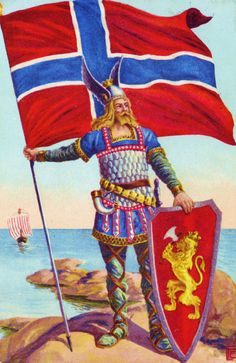
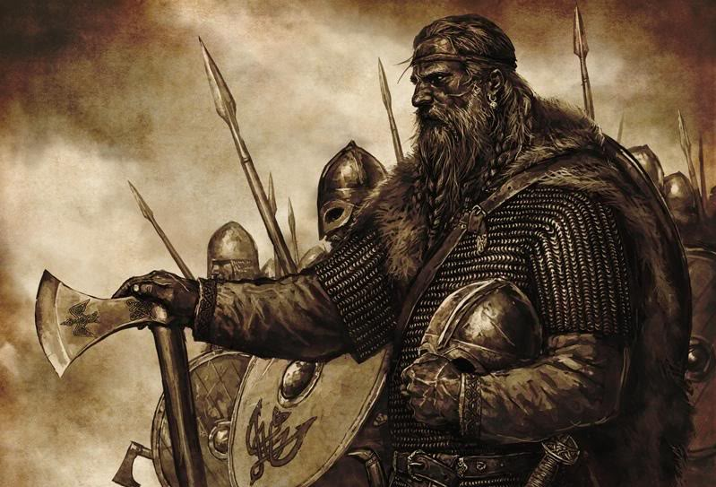
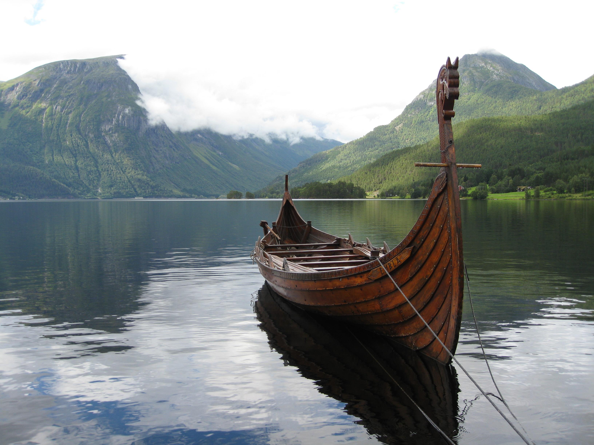

Viking culture, people and history
The Vikings were fierce warriors and skilled poets
Think of the Vikings and it's not poetry, woodcarving and storytelling that spring to mind, but colourful images of horned helmets, berserkers, longships, Valhalla, the one-eyed god Odin and men dying sword in hand or drinking out of skulls.
And it's true, the Vikings were pirates who came to plunder and kill, and they spread terror along Europe's coasts. But their reputation is not entirely fair: They were not just ruthless warriors, but also skilled traders, administrators and craftsmen in metal and wood, producing beautiful jewellery and artefacts that survive to this day.
The Vikings were also some of Europe's best storytellers and the Norse sagas continue to fascinate modern audiences. And, by the way, they did not have horned helmets: No self-respecting Viking would want to look like a cow.
Live the Viking life
We know a lot about what Viking life was like a thousand years ago, and you can experience a little of Viking life today. At Lofotr Viking Museum a traditional Viking longhouse has been built, and the museum also hosts Viking festivals and events where you can get a taste of Viking life and living. And in Oslo you can see the genuine article.
It was important to show courage in battle
How did such a small and scattered people conquer so much territory? Norwegian Vikings were courageous, cunning and had a fatalistic outlook which made them natural risk takers.
Viking raiding parties seem to have had an amazing ability to shrug off losses, whether in battle or in dangerous sea voyages.
Many men were lost in battles in continental Europe, and in 876 the Vikings lost as many as 4,000 men and 120 ships in a great storm off the south English coast. There was also much infighting between Danish and Norwegian Viking bands, especially in Ireland, where losses were extremely high in relation to the Viking population. Despite all of this this, their appetite for conquest and exploration remained high.